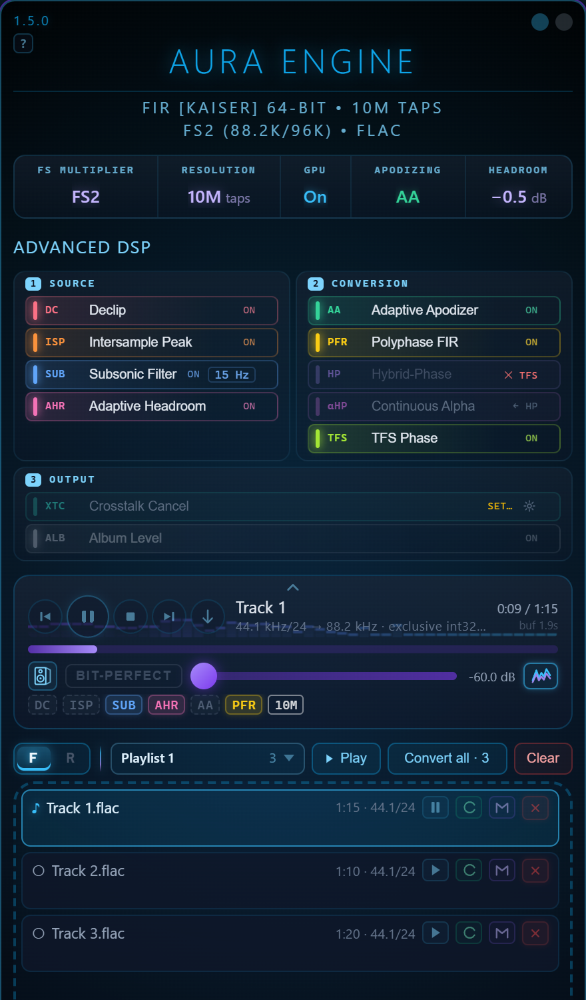
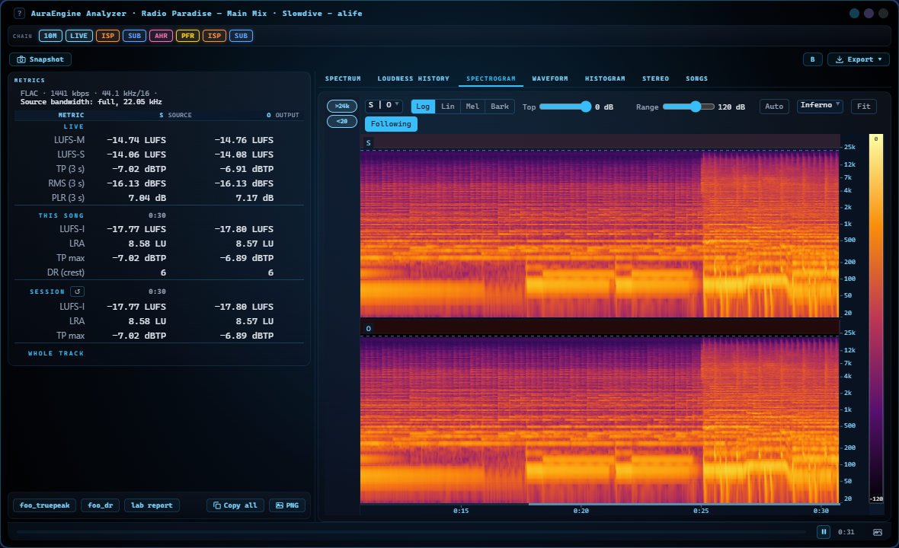
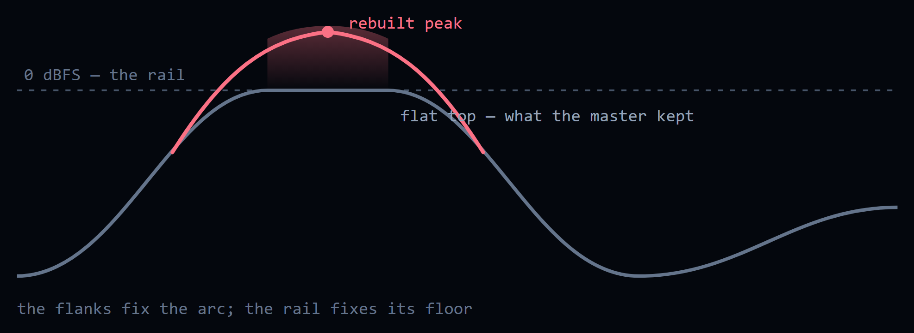
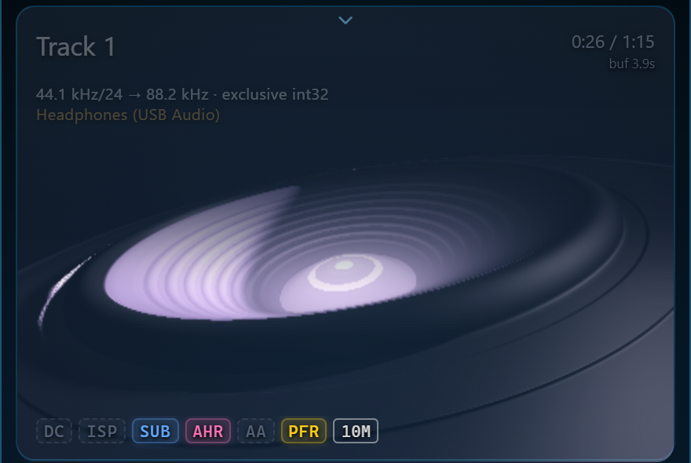
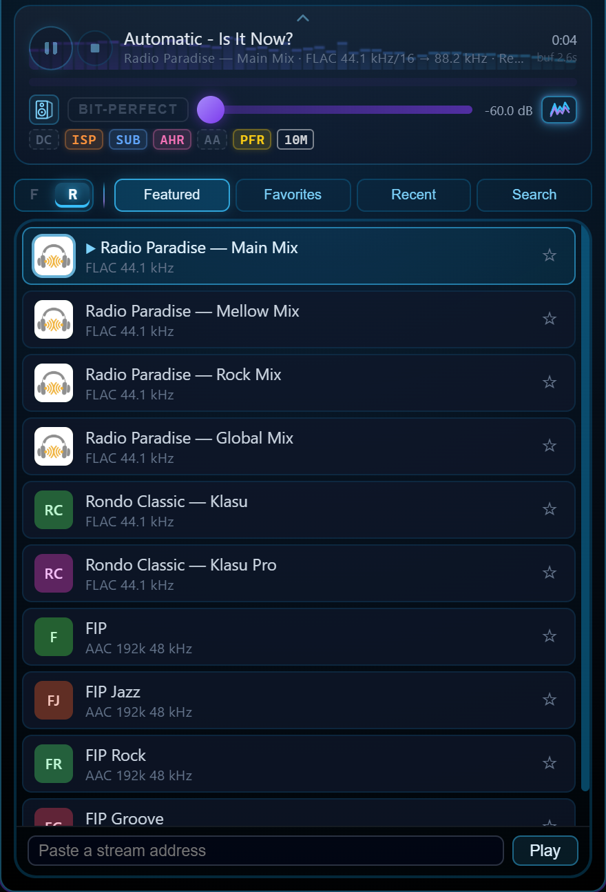
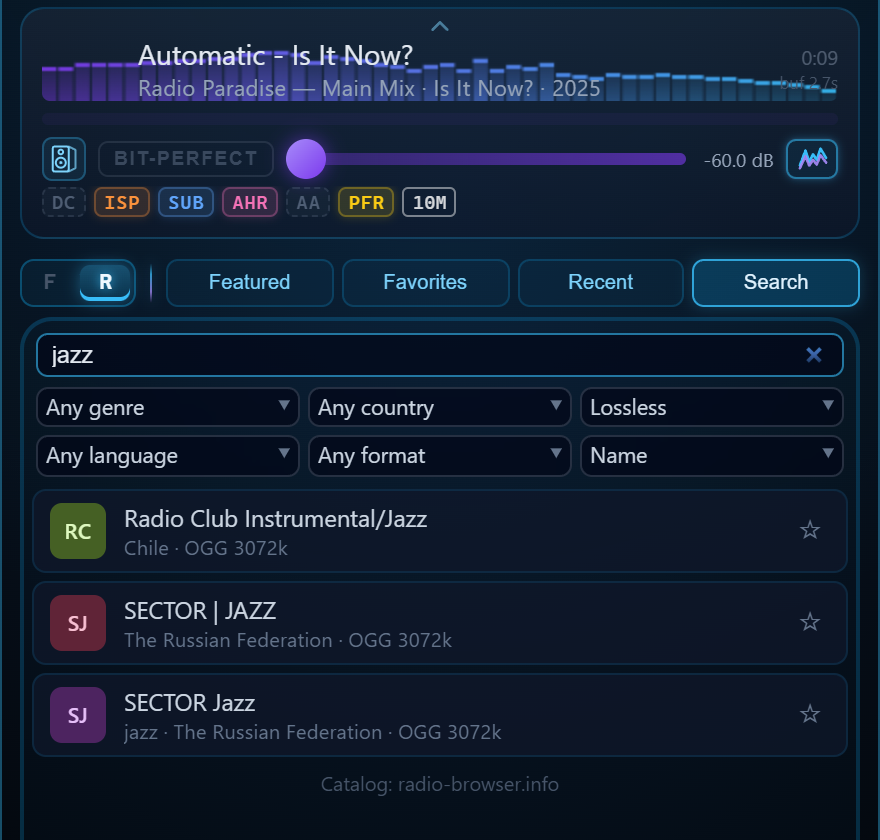
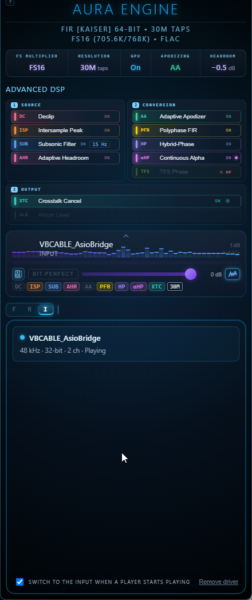
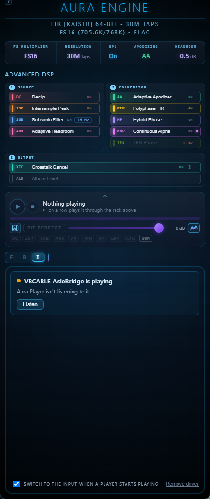
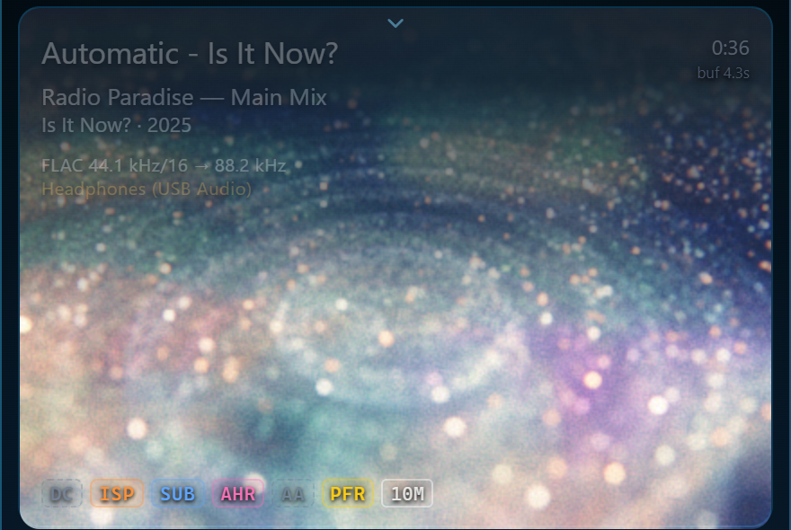

Missing filters, one click
A compact line above the filter rack names what a setting needs and the disk lacks, with its size.
A dialog downloads it from the public filters release — every file checked by size and
SHA-256 against a signed manifest, resumable after Cancel, with a free-space check and progress in the bar.
The Storage tab
Lists the filter files this version no longer uses; a click moves them to the Recycle Bin.
Four bundles by output rate
Lite (~0.17 GB), ×8, ×16 and ×32 (~2.0 GB each) replace the 5k / 1M / 10M / 30M bundles. The 100M–1G rungs come from the in-app download.
Slow connections
The updater no longer gives up after five minutes on a slow link.
This page is that documentation. Source: github.com/ToxaDev/aura-engine
00Why offline
Every DAC upsamples. It has to — reconstructing an analog waveform from 44,100 samples per second requires an interpolation filter. But a DAC chip does it in real time with a filter of a few hundred to a few thousand taps. AuraEngine removes the real-time constraint entirely: it renders the track offline through FIR filters of 5 thousand to a billion taps, designed in 128-bit arithmetic, applied in end-to-end 64-bit float. The DAC then receives a 352.8/384/705.6/768 kHz (or, since 1.8.0, 1411.2/1536 kHz) waveform that is already reconstructed — its own filter has almost nothing left to do. How long the filter is, is a setting, not a quality tier: on music a 5k and a 30M render agree below 20 kHz, and what length changes is how steep the wall at the cutoff is (the stop band is deepest at 30M; longer filters make the wall steeper, not the floor deeper) (measured).
Since 1.5.0 the same chain also plays. The player prepares the source stages for the whole track ahead of time, runs the convolution on the CPU — or on the graphics card when the CPU cannot keep up — and shows which stages are already in the sound. It plays internet radio the same way, as the stream arrives. The converter stays the place where nothing is rushed: every stage at full length, and the written file verified against the render (the player, radio).


Nothing is hidden
The engine logs every decision — which filter file it resolved, how many
hybrid-phase switches it made, whether true-peak protection acted — and
re-decodes every output file to prove it matches the internal math within
±2 LSB. Files that fail are renamed _UNVERIFIED.
Nothing is louder or quieter
Every filter is normalized to exactly unity DC gain
(sum(h) == 1.0). One gain is applied to a whole file: the
true-peak normaliser, when the render would exceed the ceiling —
−0.5 dBTP, or whatever Headroom names; with Album Level on, the
tracks of an album share it. The only other is the ISP stage's output
limiter, which can hold an over by dipping the gain for about
1.5 ms instead of taking the whole file down. Nothing ever raises a
quiet file. Documented, and visible in the log.
01The signature: Hybrid-Phase
Invented for this project. Every FIR filter forces a trade: linear phase keeps the stereo image coherent but pre-rings before every attack; minimum phase hits clean but warps inter-channel timing. Fixed "intermediate-phase" compromise filters carry a little of both flaws, everywhere, all the time. AuraEngine refuses the trade — it renders the track twice in full and switches between the two renders per-transient.
Stereo-linked by construction
One switch plan is computed from the mid signal and applied to both channels at the same sample. The channels can never de-phase against each other — the image stays put while the attacks stay clean.
Engineered to be inaudible
Switches fire only at zero crossings, through a 1 ms fade on a smooth curve (a shorter one used to leave a tick at every switch — fixed in 1.3.2), with a 20 ms anti-chatter hold. The two renders are aligned sample-exact via band-weighted group delay (200–6000 Hz) before blending. Verification: doc 06.
What the detector keys on, precisely. It measures the rise of percussive energy between analysis frames — the start of a sound. It does not measure whether the filter would ring on this material; it knows nothing about the transition band. On music the two coincide, because an attack is both a beginning and a broadband event. On synthetic material they come apart: a steady square wave with arbitrarily steep edges produces no trigger at all, because nothing begins. So the honest name for the stage is minimum phase on attacks, and there is a known blind spot in the first ~24 ms of a file — both are written up, with the numbers, in doc 06 §1.
02The signal path
One file, start to finish. Stages marked optional are user toggles; everything else always runs. The entire CPU sample path is 64-bit float — there is no f32 truncation anywhere between decode and dither.
FLAC, WAV, MP3, OGG and AAC/M4A are decoded by the pure-Rust
Symphonia library straight into f64 — HE-AAC by the FDK AAC decoder
built into the program, at its full rate, and a chained Ogg file to the end of its
last link. Integer PCM keeps every bit —
a 24-bit master divides by 2²³ exactly — and a lossy decoder's output is kept
as it comes, including the samples that sit above full scale, which MP3 and AAC
legitimately produce. Nothing is clipped on the way in; the output ceiling
decides what happens to those peaks. MP3/AAC encoder padding is trimmed using
gapless metadata.
Why it matters: the chain starts bit-exact, and it starts with the whole signal. A 24-bit FLAC enters with all 24 bits intact; an MP3 that peaks at +7 dBFS enters at +7 dBFS.
Per-channel mean removal (default) or an optional 2 Hz
single-pole IIR high-pass with the exact closed-form pole
r = e^(−2π·2/fs).
Why it matters: a fraction of a millivolt of DC offset would make a 30M-tap filter ring at infrasonic frequencies and poison the true-peak measurement.
A master pushed into the rail came back with its peaks flattened. The flat top carries no information about how high the wave was going; the flanks either side of it do. Declip finds those runs and rebuilds the arc across them by constrained autoregressive interpolation, with the rail treated as a lower bound rather than a value.


Why it matters: it refuses far more often than it fires. A run shorter than 17 samples is a limiter working, not a clipper, and the stage stands down and says so — on a 2014 Santana master, twelve tracks, not one run reached the threshold. The output ceiling takes the rebuilt peaks back down, so a declipped file arrives quieter: level-match before comparing. Since 1.5.0 it leaves MP3, AAC, Vorbis and Opus sources as decoded: their samples above full scale are the codec’s, not a clipped master’s.
A waveform is not only its samples. Between them the reconstructed signal can go higher than any sample does, and higher than full scale. ISP scans at 4× with a Lanczos kernel and applies the smallest correction that clears the overs. At the end of the chain its second half, a limiter with ~1.5 ms dips, trims the overs the reconstruction itself makes, so the whole file does not come down for a few milliseconds of peaks.

Why it matters: this is where a DAC or a downstream encoder clips a file that never exceeds 0 dBFS. Spans Declip has just rebuilt are left alone — they are deliberately above the old rail, and holding them down is the output ceiling’s job, not this one’s.
Runs here, after the repairs above, so a high-pass cannot tilt the flat tops they read. A linear-phase FIR high-pass at the source rate: a Kaiser-windowed sinc low-pass, spectrally inverted, so the response at DC is exactly zero. Flat within 0.01 dB from the corner up — 20, 15 or 10 Hz — and at least 100 dB down from half the corner to DC; 29 813 taps at 44.1 kHz and 20 Hz. Since 1.3.3 the same filter runs a second time at the output rate, after the intersample-peak limiter at the end of the chain: its short gain dips modulate the bass and would put a shelf of infrasound back under the corner.
Why it matters: subtracting the mean removes a constant offset and nothing else. A slow wobble goes through it untouched — one CD in the Audio Science Review thread carries a component near 1 Hz at about 1 % of full scale. This is protection for speakers, not a sound improvement. Linear phase is the point: above the corner nothing moves in level or in time. It costs look-ahead — half the filter — which the converter and the player’s preparation have for free, and a live radio stream pays as a short wait before its first sound.
The true-peak ceiling the finished render is normalised to: Off leaves the shipped −0.5 dBTP, and −0.5 / −1.0 / −3.0 dB name their own. Nothing is scaled before the filter.
Why it matters: it is a ceiling, not a target — a file already below it is passed through untouched. Until 1.2.3 this was a gain applied before the convolution, which the absolute ceiling at the far end then cancelled exactly: the control did nothing on any loud master.
Adaptive Headroom (on by default) decides whether to honour that ceiling on this file: it keeps the shipped −0.5 dBTP when the source peak already sits below the target, or when ENOB says the master is a clean high-bit-depth one, and otherwise lowers it as asked. It is a veto on the setting rather than a replacement for it, so with Headroom on Off there is nothing to decide and the stage does not run.
Masters carry the fingerprints of every filter that ever touched them. The v3 analyzer reads those fingerprints instead of guessing: a time-domain detector isolates the near-Nyquist band, finds the strongest attacks across the track and looks for high-frequency energy rising before them — the signature of a linear-phase brick wall — then measures the ring's exact frequency (per-burst FFT, median across attacks) and places a corrective minimum-phase Kaiser lowpass just below the measured edge, with depth chosen by severity (β=24 strong / β=14 mild). A Welch spectral-cliff detector unmasks fake hi-res — upsampled 44.1/48 kHz masters inside 88.2k+ containers are treated against their original Nyquist — and a mirror-image alias probe catches bad upstream resamplers whose spectral images defeat every other test. A cliff with no pre-ring means the source filter was minimum-phase or already apodized: diagnosed in the log, audio untouched. Static presets (Gentle 20 kHz / Moderate 19 kHz / Strong 18 kHz) are available too.
Why it matters: upsampling scales flaws along with music. Healing the source's pre-ring first gives the big FIR a clean canvas — and tracks that don't need it pass through untouched. Since 1.5.0 it also stands down on a lossy file whose codec has already cut everything below where its cutoff would go: a filter there would only turn the phase.
The engine has two resampling architectures, selected by the Polyphase FIR Resampling toggle. Both end at the same output stage.
- Rubato
SincFixedIn<f64>upsamples first: 512-tap sinc, 512× oversampling, cubic interpolation, ≈−180 dB stopband. - The million-tap FIR then runs at the output rate as a spectral-shaping post-filter — partitioned overlap-save, block 32768, Kahan-compensated frequency-domain MAC, parallelized with Rayon.
- Filter blob missing? The post-filter is skipped with a logged warning — Rubato alone is still a first-class resampler.
- The same million-tap filter is decomposed into L sub-filters
(
h_k[m] = h[m·L+k]) that run at the source rate, in parallel on all CPU cores. - Anti-imaging cutoff sits exactly at source Nyquist:
fc = src_rate / (2·out_rate). Each source rate takes the filter made for its own ratio — 96 kHz to 384 kHz is ×4 — so a hi-res file keeps what it holds above the CD band. - Output length is exactly
input × L— no resampler padding at all. Non-integer targets snap down (44.1 kHz × FS8 → 352.8 kHz). - Filter blob missing? Hard error — this path refuses to degrade silently.
- Multistage, the default since 1.7.0 (5M taps and longer, ×2/×4/×8/×16, and ×32 since 1.8.0): only the sub-filter that lands on the source's own samples runs — once, at the source rate — and a short exact interpolator (≥ 210 dB) does the rest. Several times less CPU; the difference to single-stage is −204…−220 dBFS. doc 21
- The rungs above 30M (100M, 180M, 300M, 500M, 1G) exist only as branch 0 files — the one sub-filter this path runs — so they play only here. doc 12 §11
Linear-phase filters preserve the stereo field but pre-ring before transients; minimum-phase filters hit hard but smear inter-channel phase. AuraEngine runs both convolutions in full, then a native-Rust HPSS (harmonic/percussive separation) onset detector builds a transient envelope: STFT with time/frequency median masks, 8-band spectral flux, adaptive gate, envelope follower with lookahead. During sustained material you hear the linear-phase branch; one to two analysis frames before each detected attack (~12–23 ms at 44.1 kHz) the engine switches to the minimum-phase branch — at a zero crossing, with a 1 ms fade and a 20 ms anti-chatter hold. The trigger is the start of a sound, not a measurement of where the filter rings.
Why it matters: the switch is stereo-linked — one switching plan computed from the mid signal, applied to both channels at the same sample. Channels never de-phase against each other, so the image stays rock solid while attacks stay clean. The minimum-phase branch is aligned using band-weighted group delay (200–6000 Hz) so both branches sit sample-exact at the perceptual core of the music.
A different way to spend the phase budget: linear phase below 1.5 kHz, minimum phase above 4 kHz, blended across the band between. The low end keeps the exact timing a linear-phase filter gives it, while the treble is rendered with no pre-ringing ahead of a transient.
Why it matters: the magnitude response is not part of the trade — it matches the linear-phase render to ±0.000003 dB across 20 Hz–20 kHz. Only the phase differs, which is why an ordinary frequency sweep cannot see this stage at all. It is derived from the linear and minimum pair of your filter size on first use and cached — at 30M taps about 12 s and 4.5 GB of RAM, once; since 1.5.0 on a transform twice the filter’s length, which takes its stopband to −193 to −231 dB. It replaces Hybrid-Phase for the file, and the two cannot both run.
Over speakers, each ear hears both of them. XTC cancels what each speaker sends to the wrong ear, so the stereo image is no longer bounded by the speakers themselves. The filter is built from the listening triangle you measure with a tape.

This is the one stage that deliberately colours the signal. Everything else here is a repair or a rendering choice; this rewrites the file for one chair. It will not switch on until the geometry is entered, and the same check is repeated on the Rust side so a hand-edited setting cannot slip past — a canceller built from guessed distances does not cancel less, it cancels the wrong thing. Speakers only, never headphones.
The true-peak ceiling below is one gain per file, and how deep it cuts depends on what the chain did to that file — so converted one by one, the tracks of an album can come out with their balance changed. The queued files that share a folder and an Album tag are converted as one album: before the first is written every track is prepared and the cut it will need is estimated, and every track takes the deepest of them, in front of its output limiter.
Why it matters: on a 12-track album the spread
against the CD went from 6.15 dB to 0.02. The price is level and a wait: an
album comes out as quiet as its most demanding track needs, and no track is
finished before all of them are prepared. A file without the tag, or the only
queued track of its album, converts exactly as before. No filename token —
the level goes into the log and an AURA_ALBUM_GAIN tag.
4× oversampled intersample-peak scan using an 8-tap Lanczos-4 polyphase sinc interpolator (reflective edge padding, every sample inspected), measured on what the output limiter and the subsonic guard have left. If the reconstructed waveform would exceed −0.5 dBTP (or the Headroom setting), one single linear gain brings the whole file under the ceiling — with Album Level, the album’s shared gain. Quieter material is left bit-exact — no gain is applied at all.
Why it matters: loudness-war masters routinely hide +1…+3 dB intersample peaks. Without this stage they would clip in the DAC's reconstruction filter — as harshness on every loud passage.
24-bit TPDF dither with two independent random streams — one per channel, so the dither floor cannot correlate between L and R. At output rates ≤48 kHz a 9th-order Wannamaker psychoacoustic noise shaper pushes the quantization noise where hearing is least sensitive. Since 1.8.0 every rate from 88.2 to 1536 kHz has a shaper of its own too — a minimum-phase error-feedback filter of up to order 16 with the least noise in 0–20 kHz at a bounded total (at most +10 dB over plain TPDF): the noise in the audio band falls by 13–15 dB at ×2, 31–35 at ×4, 57–59 at ×8, 61–62 at ×16 and 63–64 at ×32. A 16-bit player device gets the dither and the shaper on its own grid. Samples are clamped to ±(1−LSB) after quantization.
Why it matters: proper dither converts quantization distortion into benign noise — reverb tails and room decay stay intact instead of dissolving into correlated grit.
Encoded to 24-bit FLAC in-process — no external tool and no subprocess. Frames are written to disk as they fill, so a 90-minute file costs the same peak memory as a three-minute one. The predictor order is searched per block, and the settings were chosen by measuring real converted material rather than by assumption. Cancelled or failed encodes delete the partial file.
The file just written is decoded back and compared
sample-by-sample against the DSP buffer, with a ±2 LSB tolerance at 24-bit.
Pass → ✓ VERIFIED badge. Fail → the file is
renamed _UNVERIFIED.flac and flagged in the UI.
Why it matters: this closes the loop. You don't have to trust the pipeline — the pipeline checks itself, on every single file.
03Choosing a path
Both paths share every preparation and output stage. The difference is who does the sample-rate conversion.
| Standard | Polyphase FIR (default) | |
|---|---|---|
| Resampler | Rubato 512-tap sinc, then FIR post-filter at output rate | The FIR itself, split into L sub-filters at source rate |
| Ratios | Any (44.1 → 384 kHz works directly) | Integer only; snaps down otherwise (44.1×FS8 → 352.8 kHz) |
| Output length | ~0.4 s trailing resampler pad | Exactly input × L, zero padding |
| Compute | One big convolution at output rate | Since 1.7.0, from 5M taps: one convolution at source rate + a short exact interpolator (multistage) — 3–7× less CPU in the player with 30M; the only way the 100M–1G rungs play. 1M, custom filters, ×3/×6: L convolutions at source rate |
| TFS phase | Stands down, and the row says so | Runs |
| Missing filter blob | Post-filter skipped, logged | Hard error — no silent downgrade |
04GPU acceleration without precision loss
The standard objection to GPU audio is that consumer GPUs compute in f32 — a ~−150 dB noise floor that a 30M-tap convolution would happily amplify. AuraEngine's answer is double-single (DS) arithmetic.
Double-single, enforced at the SPIR-V level
Every complex value on the GPU is a pair of f32s — a high word and an
error-correction low word — giving ≈48 effective mantissa bits. The catch:
DS math only works if the compiler doesn't "optimize" the correction terms
away. WGSL has no way to forbid that, so the compute shaders are written in
GLSL with the precise qualifier, compiled to SPIR-V with
NoContraction decorations (which Vulkan drivers are required to
honour), and loaded through wgpu's SPIRV_SHADER_PASSTHROUGH so no
shader translator can touch the operation tree.
Since 1.5.0 both convolvers keep only half of each spectrum — the spectrum of a real signal is symmetric, so the other half held nothing new — and the GPU takes both channels through one complex transform. A 30M ×8 convolver needs 416 MB of video memory instead of 736, and on an RTX 4090 a 30M ×8 conversion runs up to 1.4× faster; the output moves in the last bits only.
Measured result: the GPU pipeline nulls against the f64 CPU reference at
≈−260 dB — about 110 dB below the 24-bit noise floor. A
dedicated preflight test (ds_preflight.rs) can prove on any given
driver that the two-sum survives compilation.
Adapters without SPIR-V passthrough (e.g. DX12-only) automatically fall back to the CPU convolver — the f64 reference implementation, always available. So does a card that runs out of memory part-way through a batch: since 1.2.5 the refusal is an answer rather than a crash, and the affected filter is convolved on the CPU instead. On the polyphase path the fallback is per phase, so the phases already resident stay on the GPU.
Since 1.7.0 multistage upsampling puts only its first stage on the card — the long filter at the source rate — and runs the short interpolator on the CPU. 30M ×8 then takes about 170 MiB of video memory instead of 591, and a 30M ×8 GPU conversion 16.7 s instead of 23.5. The CPU now does so much more on its own that the card matters mainly for hi-res sources (176.4/192 kHz) and Hybrid-Phase pairs on a weak CPU.
The player uses the same switch differently: it measures whether the CPU can run the chosen filter in real time with room to spare, and moves the convolution to a discrete card only when it cannot — matching the CPU to −280 dBFS, and handing back to the CPU without a gap if the card fails mid-track.
| CPU convolver | GPU convolver | |
|---|---|---|
| Precision | f64 + Kahan-compensated MAC | DS f32 pairs (~48-bit mantissa) |
| Algorithm | Partitioned overlap-save on half spectra, FFT 65536 | Partitioned OLA on half spectra, radix-2 FFT in DS, L + iR in one transform |
| Block size | 32768 samples | 256k–2M samples (scales with filter) |
| Latency (trimmed exactly) | 2 × block | 1 × block |
| Requirement | — | Vulkan + SPIRV_SHADER_PASSTHROUGH |
05FIR upsampling on modest hardware
30-million-tap upsampling on a CPU, without a graphics card. Since 1.7.0 the long filter runs once, at the source rate, and a short linear-phase interpolator — designed to 218 dB, stop band at least 210 dB — takes the result the rest of the way to ×2…×32: multistage (cascade) upsampling. The long filter still decides the wall, the phase and the ringing; the work per output sample falls several times (how it works and how it was checked).
Measured on an Intel Core i9-14900K. The four efficiency cores rows pin the process to four of its E-cores, as a stand-in for a modest laptop CPU — not a real laptop. Source: 44.1 kHz CD material; filter: 30M taps (counted at the output rate), linear phase.
Player: CPU per second of music
| ms of CPU time per second of music | ×4 | ×8 | ×16 |
|---|---|---|---|
| Four efficiency cores — multistage | 50 | 27 | 23 |
| Four efficiency cores — single-stage | ~160 | ~160 | ~160 |
| All cores — multistage | 11 | 6.9 | 4.7 |
| All cores — single-stage | 34 | 34 | 34 |
On four efficiency cores a 30M ×8 stream now runs about 35 times faster than real time (about 7 times single-stage). In a real window, 30M ×4 went from one full core to a quarter of one.
Player: from the press to the first sound
| 30M, four-minute track, CPU only | ×4 | ×16 |
|---|---|---|
| Four efficiency cores — multistage | 1.51 s | 1.15 s |
| Four efficiency cores — single-stage | 1.86 s | 1.80 s |
| All cores — multistage | 0.40 s | 0.62 s |
| All cores — single-stage | 0.79 s | 0.77 s |
The time until the first 0.3 s of output is ready, with XTC and the subsonic filter on; opening the device not included; median of three; 1.8.1 code, 2026-10-24. Playback does not wait for a conversion: the track is decoded and its source stages run ahead of what you hear, and the stages that need the whole track switch in as they get ready.
Converter and accuracy
| Converter: a 3:43 track, 30M, all cores, CPU only | ×4 | ×8 | ×16 |
|---|---|---|---|
| Multistage, wall time | 13 s | 20 s | 33 s |
| Single-stage, wall time | 23 s | 29 s | 45 s |
| Multistage, times faster than real time | 17× | 11× | 6.8× |
| Multistage against single-stage, 30M ×8 | Difference (null) |
|---|---|
| Linear phase | −212 … −220 dBFS |
| Minimum phase | −212 … −219 dBFS |
| TFS | −204 … −210.5 dBFS |
| Hybrid-Phase | −219.8 dBFS |
The last bit of a 24-bit file is at −144 dBFS; the difference sits about 66 dB below it. Not bit-identical — rounded to 24 bits, one sample in 20 000 to 90 000 differs by one LSB — but the wall (−6 dB at 21 050.01 Hz), the phase, the ringing and the delay are unchanged, and in a blind A/B the listener could not tell the two apart. Filter length stays a setting, not a quality tier; multistage makes the long filters cheap enough to choose on an ordinary computer. It applies from 5M taps up; 1M (the default on a fresh install), 5k, custom filters and ×3/×6 stay single-stage.
Do I need a powerful PC or a graphics card?
No. Pinned to four efficiency cores of an i9-14900K — a stand-in for a modest laptop — the player runs a 30M-tap filter at ×8 on 27 ms of CPU per second of music, about 35 times faster than real time, with no graphics card. Any filter also converts on any machine; a long one just takes longer.
Do I have to wait for the conversion before I can listen?
No. ▶ plays the source through the same chain at once: on those four efficiency cores the first sound of a 30M track is ready 1.2–1.5 s after the press (0.4–0.6 s on all cores), and the stages that need the whole track switch in as they get ready. Converting is for keeping a file, not for listening.
Is multistage (cascade) upsampling lossy?
It is not bit-identical, but the difference to the single-stage output of the same 30M filter is −204 to −220 dBFS, about 66 dB below the last bit of a 24-bit file; the wall, the phase and the delay are unchanged, and in a blind A/B no difference was heard.
06Filter design: 128-bit offline, f64 at runtime
The converter deliberately cannot generate filters at runtime. Coefficients
come from fir-optimizer, a Python design suite that builds each
Kaiser-windowed (β=14) sinc prototype in 128-bit arithmetic
(mpmath, 38 significant digits), normalizes DC gain with
extended-precision summation, and ships the result as f64 .npy
blobs.
A filter per ratio — never rescaled
The matrix covers every conversion the app can perform: 5 tap sizes (5k/1M/5M/10M/30M) × 8 output rates × 2 phase variants = 80 blobs, plus, since 1.8.0, their two ×32 rates and five rungs above 30M (see below). Each is designed for its exact ratio — passband to source-Nyquist−2 kHz, stopband from source Nyquist — so the runtime never stretches a filter to a rate it wasn't designed for.
Minimum-phase, done right
The minimum-phase variants are derived by cepstral folding with ≥16× zero-padded FFTs (no time-aliasing), tail-faded with a Hann window, and re-normalized to unity DC gain afterwards. Impulse peak lands at sample zero: mathematically zero pre-ringing.
Measured, not promised
The production 30M-tap blob measures: stopband ≤ −220.9 dB (manifesto requirement: −140 dB), passband ripple ±0.09 nano-dB, unity-gain error 1.1×10⁻¹⁵, transition width 0.05 Hz. Full plots, methodology and the reproduction script: docs/15-measurements.md. Every blob ships with a JSON metadata sidecar, and the runtime logs exactly which file it resolved for each conversion.
The ladder to 1G (1.8.0)
Ten rungs, counted at the output rate: 5k · 1M · 5M · 10M · 30M
· 100M · 180M · 300M · 500M · 1G. Past 30M the stop band does not get deeper
— 30M already sits at the floor of double-precision arithmetic, which is why the
slider marks it optimal — the extra taps only make the wall at the cutoff
steeper. The rungs from 100M up are stored as branch 0 at the source rate
(.b0.npy, with .b0.ends.npy and a .b0.json that carries the whole
filter’s exact sum), L times smaller than the whole filter, generated piece by piece
and proven bit for bit against whole files; minimum phase is available for them too
(up to 268M through the full cepstrum, 300M–1G in one half-size FFT array). They play
through multistage upsampling only.
doc 12 §11
| Rung | Offered at | Worst stop band 44.1 kHz ×8, linear | Kernel at ×8 352.8 kHz | Comes with |
|---|---|---|---|---|
| 5k | FS2–FS32 | −193 … −220 dB (window fitted per rate) | 14.2 ms | Lite bundle |
| 1M | FS2–FS32 | −191 dB | 2.83 s | Lite bundle |
| 5M | FS2–FS32 | −205 dB | 14.2 s | filter pack |
| 10M | FS2–FS32 | −211 dB | 28.3 s | ×8 / ×16 / ×32 bundles |
| 30M | FS2–FS32 | −220.9 dB (optimal) | 1.42 min | ×8 / ×16 / ×32 bundles |
| 100M | FS4–FS32 | −216 dB | 4.72 min | branch-0 packs |
| 180M | FS4–FS32 | −211 dB | 8.50 min | branch-0 packs |
| 300M | FS4–FS32 | −207 dB | 14.2 min | branch-0 packs |
| 500M | FS8–FS32 | — | 23.6 min | branch-0 packs |
| 1G | FS8–FS32 | — | 47.2 min | branch-0 packs |
07The laws of the DSP core
From DSP_MANIFESTO.md — the axioms every commit is audited against. Violating one degrades the device class; that is the review bar for this codebase.
Unity DC gain
No filter may change the track's loudness. sum(h) == 1.0, verified in unit tests for every filter mode.
Headroom is a ceiling
The Headroom setting names the output ceiling in dBTP and the true-peak normaliser enforces it at the end. Nothing is scaled before the filter: the source reaches the convolver as decoded. A file already below the ceiling passes through untouched.
True-peak at the very end
The intersample scanner sits immediately before quantization, after every processing stage.
No time-aliasing
Cepstral minimum-phase conversion uses ≥16× zero-padded FFTs so computation tails never wrap around.
Zero pre-ringing
Minimum-phase impulses peak at sample [0] with mathematical zeros before it.
Stopband ≥ −140 dB, no ripple
Kaiser, β = 14 from 1M taps up and fitted to the length at 5k. Measured: −185 to −221 dB across the matrix, −193 to −220 dB at 5k.
f64 end to end
Any f32 truncation in the sample path is a blocker-class bug. GPU DS arithmetic exists to satisfy this law on f32 hardware.
FFT convolution only
Overlap-add/save partitioned convolution, block sizes tuned to cache and VRAM.
08Verification & the audit trail
Per-file proof
Every output FLAC is re-decoded and compared against the internal f64 buffer (±2 LSB at 24-bit). The UI shows ✓ VERIFIED only when the file on disk provably contains the math the log describes.
Per-build proof
More than 900 unit tests pin the invariants: convolver latency is exactly 2 blocks (CPU) / 1 block (GPU), unity gain through the OLA engine, bit-exact polyphase reconstruction, stereo-linked switching, true-peak and dither behaviour — and the player’s streaming stages against the converter’s whole-file code. CI runs them on every push.
The console is the product
AuraEngine keeps a console window next to the UI on purpose — it starts
minimized, out of the way, and the same log goes to
%LOCALAPPDATA%\AuraEngine\logs. It
prints the full DSP trace: which .npy was resolved, ADC-ringing
analysis verdicts, hybrid-phase coverage statistics, true-peak decisions,
verification results. If you audit audio software for a living, start
there — then read the
auditor's guide.
09One engine, two ways: convert or play
The question is not offline against real time. Every file in the list has ▶ beside C, its convert button, and both run one engine and one chain — the same filter blobs, phase engine, rack and output stages, from the same code — which does not quietly give up sound for speed. The converter has no deadline. The player prepares ahead what a track needs whole and switches each stage in as soon as it is ready; once every stage is in, what it sends to the device matches the converted file to −120 dB (measured on 30M taps, FS×8, TFS, XTC). When the machine cannot keep up, it moves to the graphics card, then to fewer taps, and says so. A live stream has no future to read ahead into: only Declip and the Adaptive Apodizer stand down there, and the interface shows it.
| Converter | Player — a file | Player — a stream | |
|---|---|---|---|
| Chain | The whole rack, every stage at full length | The same rack; source stages prepared ahead over the whole track | The same rack as the stream arrives; linear phase looks 50 ms ahead |
| Whole-track stages | All, before anything is written | All — switched in as they get ready, or before the first sound | Declip and the Adaptive Apodizer stand down |
| Album Level | One level per album | Each track at its own level | — |
| Hardware | Any machine — 30M at a high FS just takes longer | Real time: CPU (30M ×4 on about a quarter of a core since 1.7.0), or a discrete graphics card; fewer taps if neither keeps up, and it says so | As for a file |
| Output | 24-bit FLAC, checked against the f64 render; or DSF, DSD64–DSD1024 | WASAPI exclusive, DSD64/128/256 over DoP, or BIT-PERFECT | The same |
| Best for | Music to keep and play anywhere | Hearing a setting first; listening at once | Internet radio |
Why convert, when the player matches it? Any filter on any machine; one level for a whole album; a file that plays anywhere, with no PC; no CPU and nothing to keep up with while you listen; and a file checked against the render it came from. Why play? To hear a setting before an evening goes into converting; to listen at once, without disk space for hi-res copies; and radio, which cannot be converted.


What is in the sound, and when
Some stages need the whole track before they can decide. By default the sound starts at once: Declip, ISP, the subsonic filter and Adaptive Headroom run over the track as it is decoded, ahead of what you hear, and the level follows the loudest moments a few seconds ahead until the whole output is measured. The badges under the player light as stages come into the sound, and a thin bar fills until all of them are in.
With Instant start off, nothing plays until every stage is ready — on an i9-14900K, a four-minute CD track at FS×2 in about 1.7 s at 1M taps and 2.1 s at 30M on the graphics card.
Nothing cuts the sound
A seek keeps the old place playing until the new one is ready, then crossfades. The next track is prepared while this one plays and follows it without a gap; a change of rate family costs only the device reopening, about 0.6 s. A rack change is built while the old chain plays and takes over in place, 1.5 s after the last click.
The graphics card, when the CPU cannot keep up
The player measures, on your machine and for the chosen filter, whether the CPU convolves in real time with room to spare, and uses a discrete card only when it does not — rare since 1.7.0, when a 30M filter at ×4 takes about a quarter of one core. On the card 30M ×8 takes about 170 MiB of video memory, matching the CPU to below −280 dBFS. If neither keeps up, the tap count steps down once for that track, and the taps chip says so.
BIT-PERFECT, and a guard on the output
BIT-PERFECT sends the decoded file to the device untouched — its own rate and depth, no rack, no volume, no dither — and switches while a track plays. Otherwise the device is opened in WASAPI exclusive mode at the output rate (up to ×32 — 1411.2 or 1536 kHz — where the device takes it; a 16-bit device gets dither and noise shaping on its own grid), and what reaches it is checked after the volume control: a block more than 12 dB louder than the volume allows becomes silence. Since 1.7.0 a DSF or DFF file in BIT-PERFECT goes out as it is, over DoP at its own rate.
DSD output (1.7.0)
The format dropdown beside the device button offers PCM, DSD64, DSD128, DSD256. The chain runs up to the DoP carrier rate (176.4, 352.8 or 705.6 kHz) and a sigma-delta modulator — twelve of them, orders 5 to 9, plain, Wide and look-ahead — makes the DSD stream, sent as DoP through WASAPI exclusive. The list opens on the best one this PC can run, marks a heavy one high CPU, greys out one it cannot run, and steps down if the PC falls behind. At DSD64, SDM7 LA+ measures −158.8 dB noise plus distortion in the audio band, SDM5 −121 dB. No ASIO or native DSD; the player goes up to DSD256. doc 20
Faster starts, same output to the bit (1.7.0)
The next track in the list is prepared whole while this one plays (with 2 GB of memory free; about 370–630 MB at ×4) and starts in 62 ms instead of 260. The whole-track analysis is kept on disk and the list is analysed ahead, so an analysed track at ×4 starts in 609 ms instead of 937, a clipped one in 1.42 s instead of 2.65, a converted file in 0.36 s instead of 1.23. A faint CPU n · GPU n badge beside the version shows the app's own load; a click opens the last hour of it.
Every control, key and menu: doc 19.
10Internet radio through the rack
F / R at the head of the list switches it to the radio: featured stations, your favorites and recent ones, a search of the Radio Browser catalog — tens of thousands of stations by name, genre, country, language and format, sorted by votes, plays or quality and filtered down to lossless — or any stream's address. MP3, AAC, HE-AAC, FLAC, Vorbis and Opus over HTTP, .pls/.m3u playlists and HLS, all decoded inside the program, at 44.1 or 48 kHz and their multiples.


| Stage | On a file | On a live stream |
|---|---|---|
| DC removal | Per-channel mean, or the 2 Hz high-pass | The 2 Hz high-pass |
| Declip · Adaptive Apodizer | Run | Stand down — they need the whole track |
| ISP · Subsonic filter · XTC | Run | Run as the stream arrives |
| Adaptive Headroom | Decides on the whole track | Decides on the first 10 s |
| Linear phase | The full filter (42.5 s ahead at 30M ×8) | Its stream version, 50 ms ahead |
| TFS · Hybrid-Phase · Continuous Alpha | Run | Run from the first sound |
| Album Level | Conversion only | — |
Long filters do not make a stream wait
A linear-phase filter looks ahead by half its length — 42 s at 30M taps and FS×8, more than any broadcast can give. All of that look-ahead is ringing at the wall, so a stream plays a version of the same filter with the same magnitude and stopband, linear phase up to 20 kHz and minimum phase only in the last kilohertz under the wall. It looks 50 ms ahead, differs from the full filter by less than −200 dBFS in the audio band on music, and is derived once per length, then kept.
A dropout without a seam
When the connection drops, the player reconnects, finds where the new connection repeats what it already has, and skips the repeat. The buffer starts at 8 s and grows when the network leaves it empty; the drift between the server's clock and the DAC's is held within a second by dropping or repeating a few milliseconds in a quiet place — nothing is resampled. BIT-PERFECT works on a stream too.
Upsampling cannot add what the codec removed: a 128 kbps MP3 stream stays a 128 kbps MP3, played through a better reconstruction filter. Stations that stream FLAC are where the rack has the most to work with.
11The ASIO input
F / R / I — the switch at the head of the list has a third view. I is the input: Aura Player ASIO, a virtual ASIO device. Choose it as the output in foobar2000, JRiver, HQPlayer, Roon or any player that can play to an ASIO device, press play, and the music goes through Aura Player's rack to your DAC — at the output rate, or bit-perfect if you switch that on. Windows only.


One card, from what is happening
Install driver once, with one elevated command; Update driver when
this Aura Player brings a newer one. Waiting for a player says where to choose
the device in each player. Listen appears when a player plays and Aura Player
is not listening to it yet; a switch — Switch to the input when a player
starts playing — does it for you. While it plays, the card and the strip
show the player's name and what comes in, 96 kHz · 32-bit, and
what the rack plays it at.
Aura Player sets the pace
Two channels, 44.1 to 768 kHz, 64- and 32-bit players. The driver calls the player once a buffer's time, by the system clock, trimmed at most 100 ppm a second to what the rack takes: nothing is cut or repeated, and a host that measures its call rate sees it even. The sound leaves Aura Player about 2.3–2.6 s after the player (1.5 s without the Subsonic Filter) — 11 s in the first build — so a pause or a seek is heard that much later.
Spotify, or any Windows program
A program with no ASIO output of its own can reach the input through two programs from VB-Audio — a Hi-Fi Cable and an ASIO Bridge. They are third-party programs (donationware, Windows); AuraEngine does not include them, and how they behave is theirs.
- Install VB-Audio Hi-Fi Cable & ASIO Bridge: run the setup as administrator, then restart Windows.
- Install the driver in Aura Player's I view, if you have not.
- In Windows sound settings, or in the program (Spotify and others), play to Hi-Fi Cable Input.
- In ASIO Bridge, choose Aura Player ASIO and press ASIO ON.
- Play. The view shows VBCABLE_AsioBridge; press Listen if it does not switch by itself.

The chain this was heard on: Spotify → VB-Audio Hi-Fi Cable (48 kHz) → VB-Audio ASIO Bridge (32-bit) → Aura Player ASIO → the rack → the DAC. The driver is GPL-3.0-only, the protocol between it and Aura Player MIT; the player stays under PolyForm Noncommercial.
12The analyzer
Ctrl+Shift+A opens a window on what you hear now; a row's right-click menu opens one on the file, or on its converted copy. It measures three signals side by side: S, the source; B, the source after the rack's repair stages, before the filter; O, the output of the whole chain, from a pass over the entire track.
The numbers
Integrated, short-term and momentary loudness, LRA, true peak (BS.1770 and the engine's own 4× reading), DR, RMS, clipping runs and overs, DC offset, energy above and below the audio band — over the whole track, a selected stretch, or live.
The spectrogram
A 4096-point FFT at 44.1/48 kHz, Kaiser window, 512 log bands from 5 Hz to Nyquist (below about 40 Hz from a 3 s window), three resolutions blended; Log, Lin, Mel and Bark. In O − S, blue is where the chain made it quieter and red where louder.
The views
Spectrum, loudness history, spectrogram, the waveform down to single samples, a histogram, and a stereo view with a vectorscope and correlation.
Export
The numbers as text in the formats forums use for DR and true-peak reports, or as TSV; the loudness history as CSV; any view as PNG.
The whole-track passes run only while the analyzer is open, so playback without it costs no extra CPU. On a radio stream it measures the stream and the output live — for the song playing and for the whole session — and shows how far the stream’s spectrum really reaches: an MP3 at 128 kbps ends near 16 kHz, a lossless stream reaches half its sample rate. Its views keep what has played — about three minutes of the spectrogram, 30 minutes of the loudness and of the waveform — and follow the live edge until you zoom in or look back.
13Scenes that draw the music
In listening mode the player can draw what it plays. A scene is a GLSL shader
in an .aura-vis file; 19 come with the app, and a studio edits them,
tunes their settings with sliders and takes Shadertoy's multipass shaders,
keeping each one's author, link and licence. The player renders a few seconds
ahead of what you hear, so a scene can see a kick coming and have it land as it
sounds.


Three scenes with instruments
Stage, Lineup and Diamond Dust Stage draw each instrument of the song on its own — the kit piece by piece, the bass, the voice, the guitars and the keys — with a 282 MB pack of models (HTDemucs, DrumSep, Basic Pitch, ONNX Runtime with DirectML), downloaded once and checked file by file. Each track is analysed once, in the background: 15–25 s for a four-minute track on an RTX 4090. On a radio stream they work too, on a graphics card: the instruments come a few seconds after a station starts, and every one but the drums has its notes about two seconds before it sounds.
Picture delay, and credits
Picture delay, per output device, holds the picture back by what a DAC's filter or active speakers add and Windows does not report. Eleven scenes are adaptations of Shadertoy work by Tonny Espeset, mrange, Virgill, espeon, ixmibrahim after Martijn Steinrucken, weyland, El_Sargo, Jan Mróz, patrickjaillet and Stephane Cuillerdier, each under its own licence (CC BY-NC-SA 3.0, CC BY 3.0 or CC0).
14Get it
Everything above needs filter coefficients, and those are the big part of
the download — the full set, with the rungs above 30M, runs to tens of
gigabytes. So the app ships four
ways, each with its filters already inside. Unzip, run
aura-engine.exe, drop a track on the window: ▶ plays it,
C converts it. The app opens on
the filter that came with it: there is no setup step, and no way to land on
a setting the package cannot serve.
Lite · 5k + 1M taps
The app with 5k and 1M taps at every multiplier, FS2 through FS32. Small enough to try on a whim; anything longer the app downloads when you pick it.
Download →Beyond the bundles: the rungs above 30M, and filters by hand
Since 1.8.1 the app downloads whatever a setting needs by itself (Storage tab: files no longer used, to the Recycle Bin). The packs below are the manual way: filter packs on the 1.0.0 release,
next to the older ones. Extract one beside aura-engine.exe (its folder is
fir-optimizer/output/); the app finds it and the slider position stops being struck through.
The bundles carry none of the 100M–1G rungs. Each big-rung pack holds one rung at every multiplier it is offered at,
for one rate family (44k: 44.1 kHz sources, 48k: 48 kHz) and one phase — linear phase is what most
people need; the minimum-phase pack only matters for minimum-phase and Hybrid-Phase use.
| Pack | What it holds | Size |
|---|---|---|
| aura-filters-5k-x32.zip | 5k taps, the ×32 rates (1411.2 and 1536 kHz), both phases | ~1 MB |
| aura-filters-1M-x32.zip | 1M taps, the ×32 rates (1411.2 and 1536 kHz), both phases | 0.03 GB |
| aura-filters-5M-x32.zip | 5M taps, the ×32 rates (1411.2 and 1536 kHz), both phases | 0.16 GB |
| aura-filters-10M-x32.zip | 10M taps, the ×32 rates (1411.2 and 1536 kHz), both phases | 0.32 GB |
| aura-filters-30M-x32.zip | 30M taps, the ×32 rates (1411.2 and 1536 kHz), both phases | 0.96 GB |
| Rung | Packs (rate family · phase) | Size |
|---|---|---|
| 100M | 44k linear · 44k minimum · 48k linear · 48k minimum | 0.38 GB each |
| 180M | 44k linear · 44k minimum · 48k linear · 48k minimum | 0.68 GB each |
| 300M | 44k linear · 44k minimum · 48k linear · 48k minimum | 1.13 GB each |
| 500M | 44k linear · 44k minimum · 48k linear · 48k minimum | 0.88 GB each |
| 1G | 44k linear · 44k minimum · 48k linear · 48k minimum | 1.75 GB each |
Comparing them is the point
Unzip more than one bundle into the same folder. The filter files merge, one copy of the app serves all of them, and the tap slider then offers every size you have — so you can render the same track at 5k and at 30M and hear what a tap count actually buys, instead of taking a number on trust.
What is inside
Each bundle carries both phase types, because the Hybrid-Phase engine renders the minimum-phase branch in full and half a pair would fail. Each carries both rate families, so 44.1 and 48 kHz sources convert alike. Individual filter packs, and the app on its own, are on the releases page.